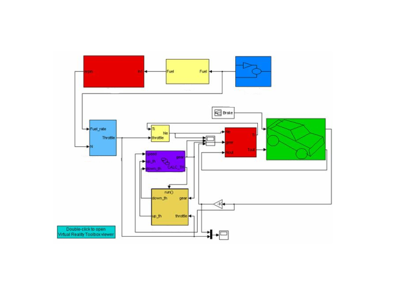
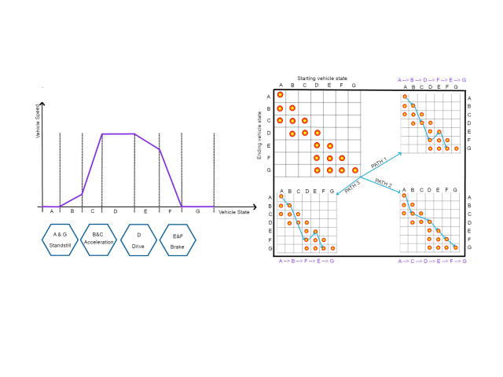
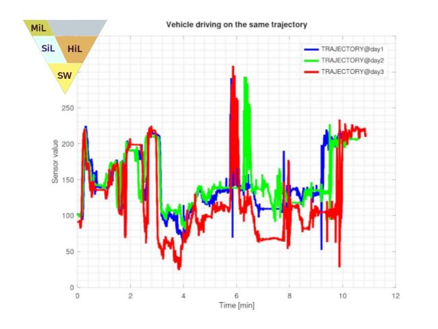
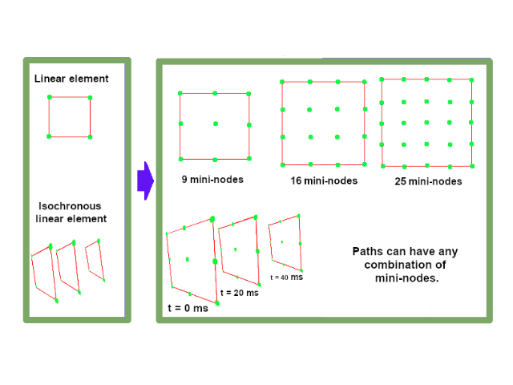
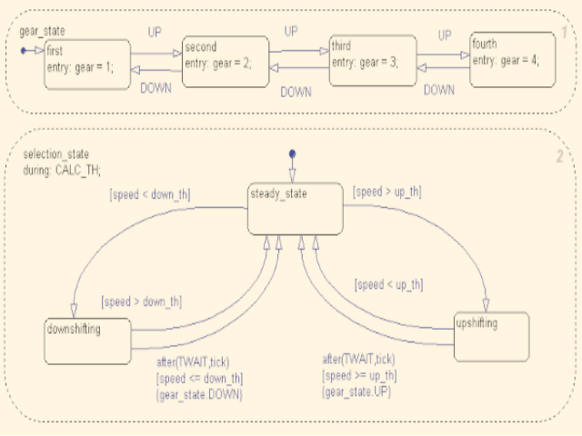
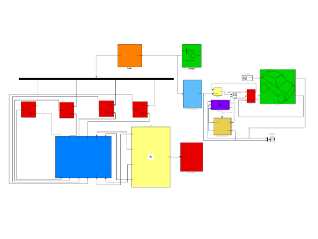
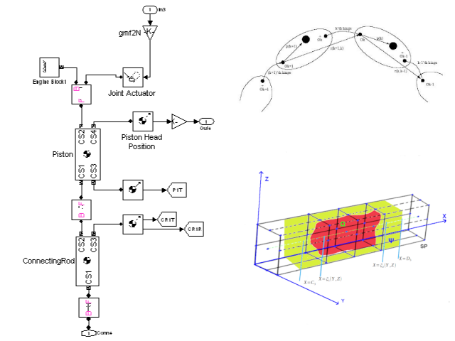
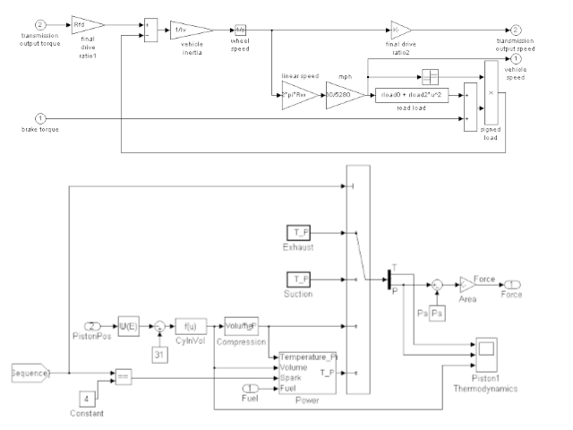

ARXDE™ ist eine spezialisierte Ressource, die auf unserer Erfahrung und Leidenschaft für den Bereich Mathematik und Ingenieurwesen basiert ist.
Unsere anerkannte Fachkompetenz in diesen Bereichen ermöglicht es uns, Computerprogramme für die Datenverarbeitung zu entwickeln, die an den spezifischsten Anforderungen gerecht sind.
Wir veröffentlichen Artikel, Bücher und nehmen an verschiedenen Konferenzen teil und nutzen ARXDE™-Daten- und Bildverarbeitungsressourcen für die Erstellung dreidimensionaler Modelle bzw. für die Integration künstlicher Intelligenz und automatisches Lernen in die Technologie der Arbeit mit großen Datenmengen.

Ingenieurarchiv
Eine unendliche Zeitschrift für technische Lösungen, international anerkannt und mit Ihrer Hilfe weitergeführt.
Wissenschaftsarchiv
Eine Sammlung von Forschungsthemen aus verschiedenen Bereichen der Wissenschaft. Eine echte Inspirationsquelle für zukünftige Forscher und nicht nur das.
Artikel:

Bücher:

Wissenschaftliche Forschung und Ingenieurdienstleistungen.
Vorteile von ARXDE™:
⬦ Technologische Beratung und Prototypenentwurf ausgehend von am Computer simulierten mathematischen Modellen.
⬦ Entwicklung und Test von Berechnungsmethoden, Algorithmen und Software.
⬦ Fortgeschrittene Studien auf dem Gebiet der Mechanik, die es uns ermöglichen, mathematische und wissenschaftliche Forschungsdienstleistungen insbesondere im Bereich der autonomen Fahrzeugtechnologie und des Maschinenbaus anzubieten.
⬦ IT-Projektmanagement.
- 
- 
- 
- 
- 
- 
- 
- 
Entwicklungs- und Testdienstleistungen.
Das Angebot an innovativen ARXDE™ Dienstleistungen umfasst
⬦ Der Entwurf mathematischer Modelle, Messsysteme, wissenschaftlicher und technologischer Instrumente.
⬦ Konzeption und Entwicklung von Prüf- und Analysemethoden in der Automobilindustrie und im Maschinenbau.
⬦ Computergestützte wissenschaftliche Analysedienste.
⬦ Forschung und Entwicklung, wissenschaftliche Prüf- und computergestützte Ingenieurdienstleistungen sowie wissenschaftliche Laborprüfdienstleistungen.
Redaktionelle Dienstleistungen.
Das Angebot an redaktionellen ARXDE™ Dienstleistungen umfasst:
Veröffentlichung von Materialien, die über Datenbanken oder das Internet zugänglich sind.
Verfassen und Veröffentlichen von Texten im Rahmen ingenieurtechnischer Planungs- und Beratungsleistungen.
Veröffentlichung von Fachzeitschriften auf Basis der entwickelten Mess- und Prüfmethoden.
Nachrichten
Wenn Sie in die E-Mail-Liste des Servers ARXDE™ aufgenommen werden möchten, können Sie uns kontaktieren unter: info@arxde.ro
Kontakt
E-Mail: info@arxde.ro
Standorte: Timişoara, Deva